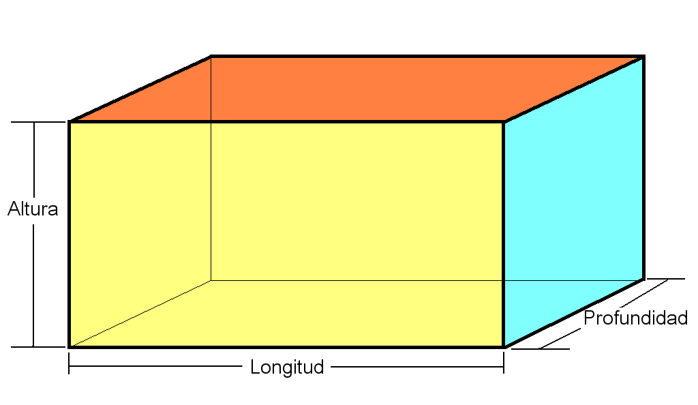

Ejercicios — Tema 3: Funciones, Módulos y Organización del Código
Para la realización de los ejercicios debe utilizar el proyecto de ejemplo t03_ejemplo que está disponible en el repositorio del curso: https://github.com/UIB-23200-Programacion/t03_ejemplo. Navega al sitio y sigue las instrucciones en README.md para copiar el repositorio en tu entorno local de GitHub.
Agrega las siguientes funciones al módulo que se especifica del paquete t03_paquete contenido en el proyecto respetando las siguientes reglas siempre:
- la función debe contener type hints, docstrings y precondiciones,
- si la precondición (o alguna de las precondiciones) no se cumple la función debe retornar
None, - Al bloque
if __name__ == "__main__"del módulo se deben agregar pruebas para validar el comportamiento de cada función. Se deben realizar las pruebas al menos para un caso normal y un caso límite (de existir).
Ejercicio 1: Módulo numeros.py
es_perfecto(n):
siguiente_primo(n):
collatz_tstime(n):
Devuelve el número de pasos (total stopping time) que tarda la conjetura de Collatz en llegar a 1 para un entero positivo n. La conjetura establece que, dado un número entero positivo n, si es par se divide entre 2 y si es impar se multiplica por 3 y se le suma 1. Se repite el proceso hasta llegar a 1. Vea ejercicio 27 del tema 2 para más detalles.
collatz_max(n):
Devuelve el valor máximo alcanzado durante la secuencia de la conjetura de Collatz para un entero positivo n. Vea ejercicio 27 del tema 2 para más detalles. Por ejemplo collatz_max(6) devuelve 16 porque la secuencia es: 6 → 3 → 10 → 5 → 16 → 8 → 4 → 2 → 1.
p_fibonacci(n, p):
Devuelve el n-ésimo número de la secuencia \(p\)-Fibonacci. La secuencia \(p\)-Fibonacci, para \(p \in \mathbb{Z}\) con \(p > 0\) se define mediante la siguiente relación de recurrencia: \[ \begin{aligned} F_p(0) &= 0, \\ F_p(1) &= 1, \\ F_p(n) &= F_p(n-1) + F_p(n-2), \quad n \geq 2. \end{aligned} \] Cuando \(p=1\) se obtiene la secuencia de Fibonacci clásica. Cuando \(p=2\) se obtiene la secuencia de Pell cuyos términos son: \[ 0, 1, 2, 5, 12, 29, 70, 169, 408, 985, 2378, 5741, 13860, ... \] En esta función \(p\) debe ser un parámetro con valor por defecto de 1 (produce la secuencia de Fibonacci clásica).
phi_euler(n):
Devuelve el valor de la función totiente de Euler \(\phi(n)\) para un entero positivo n. La función \(\phi(n)\) se define como el número de enteros positivos menores o iguales a n que son coprimos con n. Dos números \(m\) y \(n\) son coprimos si \(\text{mcd}(m, n) = 1\).
tau(n):
sigma(n):
exponenciacion_rapida(a, n):
Devuelve el valor de \(a^n\) utilizando el algoritmo de exponenciación rápida.
La exponenciación rápida (fast exponentiation o exponentiation by squaring) es un algoritmo para calcular \(a^n\) en \(O(\log n)\) multiplicaciones en lugar de las \(O(n)\) del método ingenuo.
Se basa en la observación: \[ a^n = \begin{cases} 1 & \text{si } n = 0 \\ \left(a^{n/2}\right)^2 & \text{si } n \text{ es par} \\ a \cdot \left(a^{(n-1)/2}\right)^2 & \text{si } n \text{ es impar} \end{cases} \] En lugar de multiplicar \(a\) por sí mismo \(n\) veces, cada paso divide el exponente a la mitad, reduciendo el problema de tamaño \(n\) a uno de tamaño \(n/2\). Por ejemplo, para calcular \(2^{10}\) solo se necesitan 4 multiplicaciones en lugar de 9. La ganancia crece con el exponente: \(a^{1000}\) requiere 10 multiplicaciones en lugar de 999.
La implementación recursiva de esta función es directa y elegante.
exponenciacion_modular(a, n, m):
Devuelve el valor de \(a^n \bmod m\) utilizando el algoritmo de exponenciación modular rápida.
La exponenciación modular rápida es la combinación de la exponenciación rápida con aritmética modular: calcula \(a^n \bmod m\) de forma eficiente. Es el algoritmo central de la criptografía moderna —RSA, Diffie-Hellman, pruebas de primalidad— porque en esos contextos se necesita calcular potencias con exponentes de cientos de dígitos, pero solo interesa el resto módulo un número grande.
La clave es que el módulo puede aplicarse en cada paso intermedio, sin esperar al resultado final. Esto se justifica por la propiedad: \[ (a \cdot b) \bmod m = \bigl((a \bmod m) \cdot (b \bmod m)\bigr) \bmod m \] Esto evita que los números intermedios crezcan sin control: aunque \(a^n\) pueda tener millones de dígitos, todos los valores intermedios permanecen en \(\{0, 1, \ldots, m-1\}\).
La recurrencia es idéntica a la exponenciación rápida, añadiendo % m en cada operación: \[
a^n \bmod m = \begin{cases}
1 & \text{si } n = 0 \\
\left(a^{n/2} \bmod m\right)^2 \bmod m & \text{si } n \text{ es par} \\
a \cdot \left(a^{(n-1)/2} \bmod m\right)^2 \bmod m & \text{si } n \text{ es impar}
\end{cases}
\]
Ejercicio 2: Módulo geometria.py
area_elipse(a, b):
area_triangulo(a, b, c):
Calcula el área de un triángulo a partir de la longitud de sus lados a, b y c utilizando la fórmula de Herón: \[
A = \sqrt{s(s-a)(s-b)(s-c)}
\] donde \(s = \frac{a+b+c}{2}\) es el semiperímetro. Reutiliza es_triangulo_valido para validar que los lados forman un triángulo válido.
area_trapecio(b1, b2, h):
:::
es_cuadrilatero_valido(a, b, c, d):
Verifica si los lados a, b, c y d forman un cuadrilátero válido.
La condición necesaria y suficiente es la generalización de la desigualdad triangular: cada lado debe ser menor que la suma de los otros tres. Equivalentemente, el lado más largo debe ser menor que la suma de los demás: \[
\max(a, b, c, d) < a + b + c + d - \max(a, b, c, d),
\] que simplifica a: \[
2\max(a, b, c, d) < a + b + c + d.
\] Obviamente se debe verificar además que todos los lados sean positivos. Recuerde que en Python la función built-in max puede recibir un número arbitrario de argumentos: max(a, b, c, d).
area_maxima_cuadrilatero(a, b, c, d):
Calcula el área máxima posible de un cuadrilátero de lados \(a, b, c, d\) correspondiente al cuadrilátero cíclico (inscrito en una circunferencia). Reutiliza es_cuadrilatero_valido para validar que los lados forman un cuadrilátero válido.
La fórmula de Brahmagupta que generaliza la de Herón es: \[ A = \sqrt{(s-a)(s-b)(s-c)(s-d)} \] donde \(s = \dfrac{a+b+c+d}{2}\) es el semiperímetro. Observa que cuando \(d = 0\) se recupera exactamente la fórmula de Herón.
area_poligono_regular(n, l):
Calcula el área de un polígono regular de \(n\) lados y longitud de lado \(l\) mediante la fórmula: \[
A = \frac{n \cdot l^2}{4 \cdot \tan\left(\frac{\pi}{n}\right)}.
\] Se debe verificar que \(n \geq 3\) y \(l > 0\). La función math.tan devuelve el valor de la tangente de un ángulo dado en radianes.
es_cuadrado(l, r, d, u):
Esta función se puede emplear en el problema Draw a Square de Codeforces. La traducción de parte del enunciado es la siguiente:
Los soldados Rosa te han dado 4 puntos distintos en el plano. Las coordenadas de los 4 puntos son \((−l,0)\), \((r,0)\), \((0,−d)\), \((0,u)\) respectivamente, donde \(l, r, d, u\) son enteros positivos. Determina si es posible dibujar un cuadrado con los puntos dados como vértices.
La función es_cuadrado(l, r, d, u) debe retornar True si es posible dibujar un cuadrado con los puntos dados como vértices y False en caso contrario.
make_a_triangle(a, b, c):
Esta función se puede emplear en el problema Make a Triangle! de Codeforces. La traducción de parte del enunciado es la siguiente:
Masha tiene tres palos de longitudes \(a\), \(b\) y \(c\) centímetros respectivamente. En un minuto, Masha puede elegir un palo arbitrario y aumentar su longitud en un centímetro. No le está permitido romper palos. ¿Cuál es el número mínimo de minutos que necesita dedicar a aumentar la longitud de un palo para poder ensamblar un triángulo de área positiva? Los palos deben usarse como lados del triángulo (un palo por lado) y sus extremos deben situarse en los vértices del triángulo. Se cumple que \(a, b, c\) enteros con \(1 \leq a, b, c \leq 100\).
La función make_a_triangle(a, b, c) debe calcular el número mínimo de minutos (un entero no negativo) que Masha necesita para poder formar el triángulo de área positiva con sus bastones.
perimetro_minimo(n):
Esta función se puede emplear en el problema Lazy Security Guard de Codeforces. La traducción de parte del enunciado es la siguiente:
Tu amigo guardia de seguridad consiguió recientemente un nuevo trabajo en una nueva empresa de seguridad. La compañía le exige patrullar una zona de la ciudad que abarca exactamente \(n\) manzanas, pero le dejan elegir cuáles manzanas. Es decir, tu amigo debe recorrer el perímetro de una región cuya superficie es exactamente \(n\) bloques cuadrados. Tu amigo es bastante vago y le gustaría que le ayudaras a encontrar la ruta más corta posible que cumpla con los requisitos. La ciudad está dispuesta en un patrón de cuadrícula y es lo suficientemente grande como para que, a efectos del problema, pueda considerarse infinita.
La entrada consistirá en un solo entero \(n\) (\(1 \leq n \leq 10^6\)), el número de manzanas que deben estar delimitadas por la ruta. Debe retorna el perímetro mínimo que se pueda alcanzar. Las manzanas se consideran cuadrados de lado 1.
::: {callout-warning title=“Pista”} Para cualquier región conexa de área \(n\) en una cuadrícula, el perímetro mínimo alcanzable es exactamente \(2 \lceil 2\sqrt{n} \rceil\). Las regiones que logran este mínimo son configuraciones compactas que siempre pueden inscribirse dentro de una caja delimitadora de dimensiones \(k \times k\), \(k \times (k+1)\) o \((k+1) \times (k+1)\), donde \(k = \lfloor \sqrt{n} \rfloor\). Las funciones math.floor y math.ceil devuelven el piso (\(\lfloor x \rfloor\)) y el techo de un número real (\(\lceil x \rceil\)), respectivamente.
:::
ortoedro(l, m, n):
Esta función se puede emplear en el problema Parallelepiped de Codeforces. La traducción de parte del enunciado es la siguiente:
Tienes un paralelepípedo rectangular (ortoedro) con aristas de longitudes enteras. Conoces las áreas de sus tres caras que tienen un vértice común. Tu tarea es encontrar la suma de las longitudes de las 12 aristas de este paralelepípedo.

La función recibe tres enteros positivos l, m y n que representan las áreas de las tres caras que comparten un vértice común. Debe retornar la suma de las longitudes de las 12 aristas del paralelepípedo.
::: {callout-warning title=“Pista”} Sean \(a, b, c\) las aristas (altura, longitud y profundidad) y \(l = ab\), \(m = bc\), \(n = ac\) las tres áreas conocidas. Los productos cruzados eliminan la variable no deseada: \[ l \cdot n = ab \cdot ac = a^2 bc \implies \frac{l n}{m} = a^2 \]
:::
Ejercicio 3: Módulo conversor.py
decimal_a_binario(n):
Convierte un número entero positivo n a su representación binaria como una cadena de caracteres.
El algoritmo clásico para convertir un número decimal a binario se conoce como el método de divisiones sucesivas por 2. Consiste en dividir el número decimal entre 2 repetidas veces. En cada paso, guardamos el residuo (que siempre será 0 o 1) y continuamos dividiendo el cociente hasta que este llegue a 0. El número binario final se forma leyendo los residuos obtenidos de abajo hacia arriba (es decir, el último residuo es el primer dígito del binario). Por ejemplo, para convertir el número decimal 10 a binario:
- 10 % 2 = 0, 10 ÷ 2 = 5, agregar ‘0’ a binario
- 5 % 2 = 1, 5 ÷ 2 = 2, agregar ‘1’ a binario
- 2 % 2 = 0, 2 ÷ 2 = 1, agregar ‘0’ a binario
- 1 % 2 = 1, 1 ÷ 2 = 0, agregar ‘1’ a binario
::: {callout-tip title=“Ejemplo”}
:::
segundos_a_dhms(s):
Imprime el número de segundos s >= 0 en el formato DD:HH:MM:SS donde DD son los días, HH las horas, MM los minutos y SS los segundos. Usa división entera y módulo exclusivamente. Esta función no retorna ningún valor, solo imprime el resultado en pantalla.
dhms_a_segundos(d, h, m, s):
En informática, representar una fecha con un único número se logra por dos vías fundamentales:
- Calculando el tiempo transcurrido desde un punto de referencia fijo temporal. A este punto de referencia se le conoce como Epoch (o época). El estándar absoluto en programación y sistemas operativos de este método es el Tiempo Unix. Representa una fecha como la cantidad de segundos (o milisegundos) transcurridos desde el “Unix Epoch” que es el 1 de enero de 1970 a las 00:00:00 UTC (del inglés Coordinated Universal Time).
- Formato de Entero Posicional (YYYYMMDD) muy común en el procesamiento de datos y almacenamiento plano. Consiste en concatenar el año, mes y día en un solo número entero. Por ejemplo, el 7 de septiembre de 2026 se representa como
20260907. Este formato tiene la ventaja de ser legible por humanos y de mantener el orden cronológico (un número mayor siempre es una fecha posterior), lo que permite ordenamientos muy eficientes sin necesidad de parsear la fecha.
Agrega las siguientes funciones al módulo conversor.py:
fecha_a_entero(año, mes, dia):
Convierte una fecha dada por año, mes y día a un único número entero no negativo en formato YYYYMMDD. Tanto el año como el mes y el día deben ser enteros positivos. El mes debe estar en el rango 1 a 12 y el día debe ser válido para el mes y año dados (considerando años bisiestos).
entero_a_fecha(n):
Convierte un número entero no negativo en formato YYYYMMDD a una fecha dada por año, mes y día en el formato DD/MM/AAAA. Por ejemplo, entero_a_fecha(20260907) devuelve la cadena '07/09/2026'.
entero_a_unix(n):
Convierte una fecha dada por n en formato de entero posicional YYYYMMDD a Tiempo Unix en segundos. Tanto el año como el mes y el día deben ser enteros positivos. El mes debe estar en el rango 1 a 12 y el día debe ser válido para el mes y año dados (considerando años bisiestos). Observe que si la fecha es anterior al 1 de enero de 1970, la función debe retornar un entero negativo.
unix_a_entero(t):
A continuación el pseudocódigo de implementaciones para las funciones en 3.4.3 y 3.4.4. Se emplea el algoritmo de Howard Hinnant expuesto en las funciones civil-to-days y days-to-civil. Trate de convertir de pseudocódigo a Python de la manera más eficiente posible.
Pseudocódigo:
En el siguiente pseudocódigo, la constante 719468 representa los días transcurridos desde el 1 de marzo del año 0 hasta el 1 de enero de 1970 (el Epoch de Unix).
De Fecha a Días
Convierte un año, mes y día en el número de días transcurridos desde el Epoch. Para obtener el Tiempo Unix, el resultado final simplemente se multiplica por \(86400\) (los segundos de un día). Observe que el pesudocódico asume entrada de año, mes y día a diferencia de entero_a_unix(n) que recibe un entero en formato YYYYMMDD.
FUNCIÓN fecha_a_unix(año, mes, dia):
// 1. Desplazar el año para que comience en marzo
SI mes <= 2:
año_logico = año - 1
SINO:
año_logico = año
SI mes <= 2:
mes_logico = mes + 9
SINO:
mes_logico = mes - 3
// 2. Calcular el periodo de 400 años (Era)
era = año_logico // 400
año_en_era = año_logico - (era * 400)
// 3. Calcular el día dentro del año y luego dentro de la Era
dia_en_año = (153 * mes_logico + 2) // 5 + dia - 1
dia_en_era = (año_en_era * 365) + (año_en_era // 4) - (año_en_era // 100) + dia_en_año
// 4. Retornar días totales ajustados al Epoch de 1970
RETORNAR (era * 146097) + dia_en_era - 719468
FIN FUNCIÓN
De Días a Fecha
Realiza el proceso inverso. Toma los días continuos desde 1970 y reconstruye el año, mes y día exactos.
FUNCIÓN unix_a_fecha(dias_desde_epoch):
// 1. Reajustar la base sumando los días previos a 1970
dias_totales = dias_desde_epoch + 719468
// 2. Extraer la Era y el día exacto dentro de esa Era
era = dias_totales // 146097
dia_en_era = dias_totales - (era * 146097)
// 3. Reconstruir el año lógico (fórmula que aplica la regla bisiesta)
año_en_era = (dia_en_era - (dia_en_era // 1460) + (dia_en_era // 36524) - (dia_en_era // 146096)) // 365
año_logico = año_en_era + (era * 400)
// 4. Reconstruir el mes y el día a partir de los días restantes
dia_en_año = dia_en_era - (365 * año_en_era + (año_en_era // 4) - (año_en_era // 100))
mes_logico = (5 * dia_en_año + 2) // 153
dia = dia_en_año - ((153 * mes_logico + 2) // 5) + 1
// 5. Deshacer el desplazamiento de marzo a enero
SI mes_logico < 10:
mes = mes_logico + 3
SINO:
mes = mes_logico - 9
SI mes <= 2:
año = año_logico + 1
SINO:
año = año_logico
RETORNAR año, mes, dia
FIN FUNCIÓN
Ejercicio 4: Nuevo módulo aproximacion.py
Crea un nuevo módulo aproximacion.py en el paquete t03_paquete para métodos numéricos. Agrega las siguientes funciones:
raiz_cubica(x, tol):
Calcula la raíz cúbica de un número real x utilizando el método de Newton-Raphson con una tolerancia tol con valor por defecto de 1e-10. Admite x negativo.
La iteración es \[ a_{n+1} = \frac{1}{3}\left(\frac{x}{a_n^2} + 2a_n\right) \] La iteración se detiene cuando \(|a_{n+1} - a_n| < \text{tol}\).
biseccion(f, a, b, tol):
La función biseccion(f, a, b, tol) implementa el método de bisección para encontrar una raíz de la función continua f en el intervalo (a, b) con una tolerancia tol con valor por defecto de 1e-6. Se debe verificar que f(a) y f(b) tengan signos opuestos antes de iniciar el proceso. La función f (parámetro de biseccion) debe ser una función que acepte un único argumento y devuelva un valor numérico, debe estar definida en el ámbito global en el cual se encuentra biseccion.
El método de bisección es un algoritmo clásico del análisis numérico utilizado para encontrar las raíces de una función \(f\), es decir, un valor de \(x\) tal que \(f(x) = 0\). Se fundamenta en el Teorema de Bolzano (o teorema del valor intermedio): si tienes una función continua en un intervalo cerrado \([a, b]\) y los valores de \(f(a)\) y \(f(b)\) tienen signos opuestos (es decir, uno es positivo y el otro negativo, por lo que \(f(a) \cdot f(b) < 0\)), entonces existe \(x\) en el intervalo \((a, b)\) tal que \(f(x) = 0\).
El método consiste en atrapar la raíz dividiendo repetidamente el intervalo a la mitad y descartando la porción donde sabemos que no está la solución.
Iterar: Se repiten los pasos siguientes mientras \(|b - a| > \text{tol}\).
Calcular el punto medio: Se encuentra el centro del intervalo actual usando la fórmula \(c = \frac{a+b}{2}\).
Evaluar la función: Se calcula el valor de \(f(c)\). Si \(f(c)\) es exactamente \(0\) entonces \(c\) es la raíz y el proceso termina.
Seleccionar el nuevo subintervalo: Determinar en qué mitad está la raíz verificando los signos:
- Si \(f(a)\) y \(f(c)\) tienen signos opuestos, la raíz está en la primera mitad. El nuevo intervalo será \([a, c]\) por lo cual hacemos
b = cy volvemos a llamar abiseccion(f, a, b, tol). - Si tienen el mismo signo, la raíz obligatoriamente está en la segunda mitad. El nuevo intervalo será \([c, b]\) por lo cual hacemos
a = cy volvemos a llamar abiseccion(f, a, b, tol).
La implementación recursiva de este algoritmo es directa y elegante.
regula_falsi(f, a, b, tol):
La función regula_falsi(f, a, b, tol) implementa el método de la regula_falsi (regla del falso o falsa posición) para encontrar una raíz de la función continua f en el intervalo (a, b) con una tolerancia tol con valor por defecto de 1e-10. Al igual que en el método de bisección, se debe verificar que f(a) y f(b) tengan signos opuestos antes de iniciar el proceso. La función f (parámetro de regula_falsi) debe ser una función que acepte un único argumento y devuelva un valor numérico, debe estar definida en el ámbito global en el cual se encuentra regula_falsi.
El método de regula falsi (o método de la falsa posición) es otro algoritmo clásico para encontrar las raíces de una función. Al igual que el método de bisección, es un método cerrado que parte de un intervalo \([a, b]\) donde la función cambia de signo (es decir, \(f(a) \cdot f(b) < 0\)), lo que garantiza que hay al menos una raíz adentro.
La gran diferencia es que, en lugar de dividir el intervalo ciegamente a la mitad, fuerza una línea recta (secante) entre los puntos \((a, f(a))\) y \((b, f(b))\). El punto donde esta línea cruza el eje \(x\) se convierte en nuestra nueva aproximación.
La idea intuitiva es simple: si \(f(a)\) está mucho más cerca de cero que \(f(b)\), es lógico pensar que la raíz real estará más cerca de \(a\) que de \(b\). La línea recta aprovecha esta proporción.
Cómo funciona el algoritmo
El nuevo punto \(c\) se calcula geométricamente usando la intersección de la recta secante con el eje \(x\), lo que nos da la siguiente fórmula: \[ c = b - \frac{f(b)(b - a)}{f(b) - f(a)} \]
El proceso iterativo es casi idéntico al de la bisección, pero cambiando la forma en la que elegimos el punto de corte:
Iterar: Se repiten los pasos siguientes mientras \(|b - a| > \text{tol}\).
Trazar la secante y calcular el punto de corte: Se calcula el punto \(c\) usando la fórmula de la falsa posición descrita arriba.
Evaluar la función en el nuevo punto: Se calcula el valor de \(f(c)\). Si \(f(c)\) es \(0\) el algoritmo termina y \(c\) es la raíz.
Seleccionar el nuevo subintervalo: Determinar en qué mitad está la raíz verificando los signos:
- Si \(f(a)\) y \(f(c)\) tienen signos opuestos, la raíz se encuentra entre \(a\) y \(c\). El nuevo intervalo es \([a, c]\), actualizamos
b = cy llamamos aregula_falsi(f, a, b, tol). - Si tienen el mismo signo, la raíz se encuentra entre \(c\) y \(b\). El nuevo intervalo es \([c, b]\) actualizamos
a = cy llamamos aregula_falsi(f, a, b, tol).
La implementación recursiva de este algoritmo es directa y elegante.